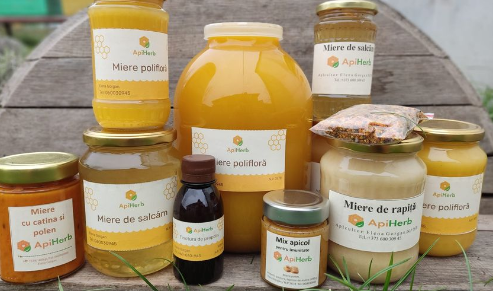
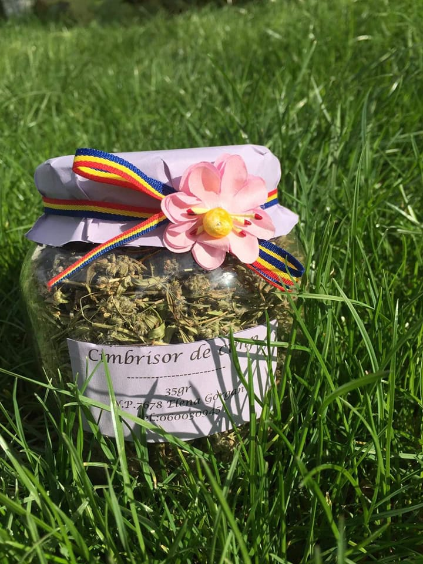
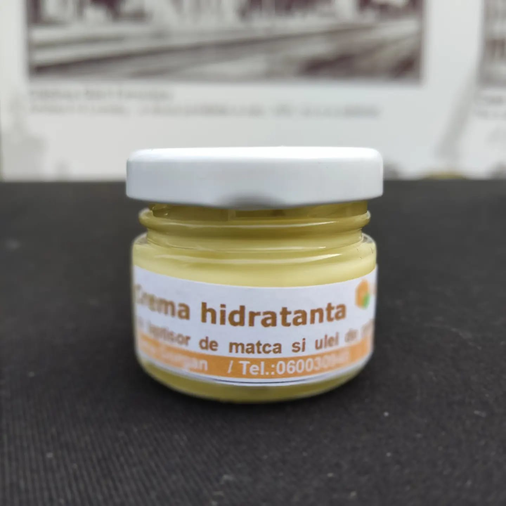

Produsele noastre
Produse Apicole
Produsele apicole - mierea, lăptișorul de matcă, polenul, propolisul, veninul de albine și ceară - contribuie la întărirea organismului, astfel încât persoanele care le consumă reușesc să-și întărească sistemul imunitar slăbit în urmă diverselor afecțiuni de zi cu zi.
Plante Medicinale
Ceaiul verde - beneficii pentru sănătate Ceaiul verde acționează și protejaza contra cancerului, scade nivelul colesterolului din sânge, reduce tendința de formare a cheagurilor sangvine, stimulează sistemul imunitar, combate degradarea dinților, ajută la reglarea nivelului de zahăr din sânge, combate oboseală mentală.
Produse Cosmetice Naturale
Toate femeile din lumea această, indiferent de statut, venit și responsabilități vor să fie îngrijite. Îți propunem o gama de produse organice 100% Noi doar facilităm legătura dintre tine și natură- mama.